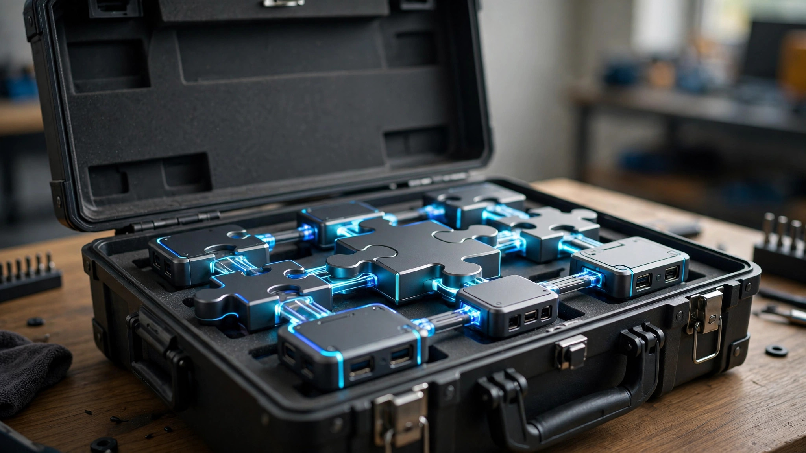

Quick answer
The SAP Business One add-ons worth your money solve specific, expensive problems: warehouse/barcode management, EDI for retail compliance, advanced reporting/BI, and industry-specific functionality you genuinely need. Skip anything that duplicates core B1 features or solves a problem you don't have. Buy for pain, not for demos — and never buy add-ons for hypothetical future problems during the initial implementation.
SAP Business One's core is strong — financials, sales, purchasing, inventory, production, CRM. But no core system covers everything, which is why the add-on ecosystem exists. Hundreds of them, from one-person shops to global ISVs. Some are essential infrastructure that the system is incomplete without. Some are shelfware with a great demo and a renewal invoice. Here's how to tell the difference.
The golden rule
An add-on is worth it when the cost of NOT having it exceeds the price — in labor, errors, compliance risk, or lost business. That is the whole test. Not "does it look cool in the demo." Not "might we need this someday." What does the absence of this add-on cost us per month, in real money? If you cannot answer that with a number, you are shopping, not investing.
"Nice to have" add-ons bought during implementation are where budgets go to die. Implementation is the worst time to buy add-ons, because you do not yet know what your real problems are. You know your imagined problems — the ones from the requirements document, written before anyone used the system. The real problems surface in month two, when the warehouse team discovers the bin logic does not match how they actually pick. Buy then. The add-on vendors are not going anywhere, and the discount for bundling at signing is never worth buying the wrong thing.
Categories that consistently deliver
Warehouse & barcode management
If you have a real warehouse, this is usually add-on #1. Core B1 handles inventory — quantities, valuations, transactions. A WMS add-on handles the physical reality: directed put-away, wave picking, barcode scanning, bin-level management, cycle counting workflows. The gap between "the system knows we have 500 units" and "the system knows they are in aisle 7, bins 3 through 9, and the picker should grab them in this sequence" is the gap between inventory records and warehouse operations.
Companies routinely cut picking errors by 50% or more and wonder how they ever operated without it. The ROI math is straightforward: count your mis-picks per month, multiply by the cost of each one (reshipping, credits, customer goodwill), and compare to the add-on's annual cost. For any operation shipping real volume, the payback is usually measured in months. This is the rare add-on that is sometimes worth buying at implementation — if you are already drowning in warehouse chaos on day one, do not wait a quarter to fix it.
EDI
If you sell to big retailers, EDI isn't optional — it's the price of admission. The retailers mandate it: purchase orders, advance ship notices, invoices, all in their format, on their timeline, with chargebacks for non-compliance. Those chargebacks will dwarf the add-on cost in a single quarter. I have seen a single missed ASN wipe out a year of EDI add-on licensing in penalties. 
This is the clearest ROI case in the ecosystem because the alternative is not "do it manually" — the alternative is losing the customer. Manual EDI compliance at retail volume is not feasible; the document volumes and turnaround requirements demand automation. If retail is your channel, budget the EDI add-on as part of the cost of the channel, not as an optional extra.
Advanced reporting & BI
B1's native reporting covers the basics — standard financials, sales analysis, inventory status. If leadership lives in dashboards — real-time KPIs, consolidated multi-branch views, drill-down P&L, margin analysis by customer — a BI add-on pays for itself the first time it prevents one bad decision.
Industry-specific functionality
Food distribution lot traceability, fashion and footwear matrix inventory, equipment rental billing, field service dispatch — if your industry has specific requirements, the right vertical add-on beats custom development every time. Someone already solved your problem, debugged it across dozens of customers, and maintains it through B1 upgrades. Rent their solution.
Red flags
The evaluation checklist
Before signing anything, run this sequence. It takes two weeks and saves you from years of regret.
Two reference calls — not the vendor's best friend, real customers. Ask them: what broke, how long did implementation really take, what does support actually look like, and would you buy it again? The last question is the only one that matters. Hesitation is an answer.
Sandbox test with YOUR data. Not the vendor's demo company — your items, your customers, your messiest transactions. Run your actual workflows: receive a real PO, pick a real order, process a real return. If the vendor will not do a sandbox trial, they are telling you something.
Upgrade policy in writing. How long after each B1 release is the add-on certified? Who pays if an upgrade breaks it? What happens to your data if you cancel? Get it in the contract, not in an email.
Payback calculation. Monthly cost of the problem (labor hours × cost, error rates × cost per error, compliance risk) versus monthly cost of the add-on (license amortized, maintenance, support). If it doesn't pay for itself in 12–18 months, it's a luxury, not an investment. Luxuries are fine when business is great — just label them honestly.
Frequently asked questions
Do I need add-ons on day one?
Usually not. Go live on core B1 first, feel the real pain points for a quarter, then buy add-ons for actual problems — the ones with numbers attached. The exceptions: EDI if retailers require it from day one (non-negotiable), and WMS if you're drowning in warehouse chaos from day one (the payback starts immediately).
Are certified add-ons safer?
SAP's certification means the add-on passed technical compatibility tests — it's a meaningful signal, not a guarantee. It tells you the add-on won't corrupt the database and follows the SDK rules. It tells you nothing about whether the vendor answers support calls, ships upgrades on time, or understands your industry. Still do your reference calls.
Can add-ons break during upgrades?
They can, which is why the vendor's upgrade track record matters more than the feature list. Ask: "How long after each B1 release is your add-on certified?" Vague answers are answers. Also ask what happens to your customizations inside the add-on during upgrades — some add-ons preserve them, some reset them, and you want to know which before it happens to you.
Should I build custom instead of buying an add-on?
Almost never, for standard problems. Custom development costs more, takes longer, and you're maintaining it forever — through every upgrade, every staff change, every edge case. Buy the add-on; save custom work for your genuinely unique competitive advantage. The thing that makes you different from competitors is worth building. The thing every distributor needs is worth renting.
Not sure which add-ons your business actually needs? Book a free meeting with me — I'll give you an honest read on what's worth it for your situation and what isn't. I've seen enough implementations to spot shelfware from a mile away.